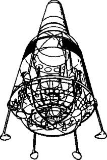
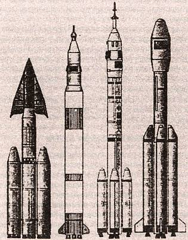

Взгляд на СОИ с нашей стороны
Ныне довольно часто можно встретить суждение, что американцы всерьез и не собирались разворачивать программу СОИ в полном объеме. Она нужна была им как своего рода блеф, направленный на запугивание руководства потенциального противника. Дескать, Михаил Горбачев и его окружение приняли угрозы за чистую монету, испугались и вложили последние деньги в свою соответствующую программу. Экономика страны этого уже не выдержала, и СССР развалился.

Западногерманский транспортный космический корабль «????».
Однако, как стало очевидно в наши дни, на самом деле далеко не все в Советском Союзе, в том числе и в высшем руководстве страны, поверили в реальность СОИ. Так, в результате исследований, которые провела группа советских ученых под руководством вице-президента АН СССР Велихова, академика Сагдеева и доктора исторических наук Кокошина, был сделан вывод о том, что рекламируемая Вашингтоном «система явно не способна, как это утверждается ее сторонниками, сделать ядерное оружие „бессильным и устаревшим“».
РАСЧЕТЫ РАУШЕНБАХА. Лично мне в ту пору довелось поговорить с ученым мирового значения, известным специалистом в области управления космической техникой, академиком Борисом Викторовичем Раушенбахом. И вот какой, довольно неожиданный взгляд на эту проблему изложил он.
На первый взгляд проекты, которые призывал реализовать в рамках программы СОИ президент Р. Рейган, выглядели вполне осуществимыми, сказал академик. Однако при более внимательном рассмотрении выяснилось, что основными элементами системы СОИ должны были стать технические устройства, принимающие решения в автоматическом режиме, иначе за быстролетящими целями попросту не успеть. Но насколько адекватны могут оказаться такие решения?
Представим себе ситуацию. Администрация США все же рискнула создать в космосе подобную систему. Естественно, ее реализация не осталась не замеченной другими странами, в том числе СССР, и в космосе появилась бы вторая, сходная система оружия, противоборствующая с первой.
Выведенные в космос многофункциональные системы составили бы в совокупности — хотим мы того или нет — некий боевой комплекс. Чтобы достигнуть нужной эффективности, он должен быть, как уже говорилось, автоматическим. Человек попросту не сможет оценить ситуацию с нужной скоростью, вовремя переработать огромное количество информации.
Далее, будем исходить в нашем примере из того, что каждой из сторон своевременно удается обнаружить операции, непосредственно предшествующие боевому использованию космических средств (хотя на самом деле их можно тщательно замаскировать), и что обе системы вовсе не стремятся развязать ядерный конфликт при первом же появлении признаков, которые могут быть истолкованы противоборствующей стороной как подготовка к началу боевых действий.
Но вот как могут развиваться события дальше даже в нашем идеальном случае.
Предположим, что каждая из двух систем, А и В, является достаточно устойчивой к воздействию помех; получив информацию, что противоборствующая сторона как будто готовится к началу боевых действий, она сначала тщательно проанализирует полученную информацию, перепроверит ее и, лишь накопив достаточное количество признаков начала активных действий противной стороной, приступит к ответным.
Однако все это будет происходить в считанные минуты. И тот факт, что обе системы устойчивы, вовсе не означает, что будет устойчива и большая система А+В, объединяющая обе в единое целое. Дело в том, что «половинки» большой системы созданы противниками, а потому отработка, отладка каждой из них должна проходить независимо, более того, в полной тайне. И первое «объединение» их в большую систему произойдет лишь в тот момент, когда они обе приступят к боевому дежурству. То есть, говоря иначе, их первая совместная работа начнется при первой реальной конфликтной ситуации, а первым испытанием могли бы оказаться боевые действия!
К сожалению, такое заключение является не только умозрительным. Согласно теории управления, объединение двух систем, устойчивых порознь, в общую систему зачастую приводит к неустойчивости последней. Дело в том, что между ними может возникнуть так называемая положительная обратная связь. В какой-то мере аналогией ее может послужить камешек, покатившийся с горы. По пути он сбивает еще камешек, потом еще и еще… И к подножию горы в конце концов скатывается целая лавина.
«Если говорить более строго, — объяснял академик Раушенбах, — подобная связь приводит к самовозбуждению системы, к началу ее работы в автогенераторном режиме. Малые начальные колебания не затухают, а, напротив, становятся все больше, пока вся система не пойдет „вразнос“…»
Положение в нашем рассматриваемом случае, как уже говорилось, еще усугубляется тем, что обе системы являются противоборствующими. То есть ни одна из них не заинтересована во включении противоположной, что на практике означало бы начало военных действий. Но и заглушить ее до конца она не может, поскольку как раз рассчитана на такое противостояние… В итоге системы обречены пристально следить друг за другом, тотчас реагируя на малейшие признаки активности с «той стороны». Но ведь таким «признаком активности» для потенциального противника может послужить и просто авария, случайный взрыв, скажем, на ракетной шахте, и т. д. Сумеет ли разобраться в этом автоматика с высокой степенью вероятности? Вряд ли… Скорее всего, она воспримет взрыв как старт ракеты из шахты. А стало быть, само существование такой системы было бы смертельно опасно для мира.
К такому заключению пришел академик Б. В. Раушенбах.
ПРОГРАММА «АНТИСОИ». Основываясь на этих выводах, можно сразу было прийти к заключению о бесполезности программы СОИ и постараться поскорее забыть о ней. Однако, к сожалению, программу действий в нашем мире зачастую определяю! не ученые, но политики. А потому и Р. Рейган далеко не сразу отказался от своих планов, и в СССР все же предприняли определенные попытки создания своей «АнтиСОИ».
Впрочем, в Советском Союзе свою ПРО начали создавать сразу же после окончания Второй мировой войны. Уже в начале 50-х годов XX века в НИИ-4 Минобороны СССР и в НИИ-885, занимавшихся разработкой и применением баллистических ракет, были проведены первые исследования возможности создания средств ПРО.
Наши специалисты предложили две схемы оснащения противоракет системами наведения. Для противоракет с телеуправлением предлагалась осколочная боевая часть с низкоскоростными осколками и круговым полем поражения. Для противоракет с самонаведением предлагалось использовать боевую часть направленного действия, которая вместе с ракетой должна была поворачиваться в сторону цели и при взрыве создавать наибольшую плотность поля осколков в направлении на цель.
«ТАРАН» ЧЕЛОМЕЯ. Один из первых проектов глобальной противоракетной обороны страны был предложен Владимиром Челомеем. В 1963 году он предложил использовать разработанные в его ОКБ-52 межконтинентальные ракеты УР-100 для создания системы ПРО «Таран». Предложение было одобрено. Постановлением ЦК КПСС и Совета Министров СССР от 3 мая 1963 года была начата разработка проекта системы ПРО «Таран» для перехвата баллистических ракет на заатмосферном участке траектории.
В системе должна была применяться ракета УР-100 (8К84) в со сверхмощной термоядерной боевой частью, мощностью не менее 10 мегатонн. Противоракета должна была поражать цель на высоте около 700 км и дальность до 2000 км. Причем для гарантированного поражения всех целей требовалось развернуть несколько сотен пусковых установок с противоракетами системы «Таран».
Кроме того, исключительно важную роль в эффективности системы должны были сыграть радиолокационные средства системы «Дунай-3», а также многоканальная РЛС ЦСО-С, вынесенная на 500 км от Москвы в сторону Ленинграда.
Однако в 1964 году работы по системе «Таран» были прекращены. Немалую роль в этом сыграли причины политические — в отставку был отправлен Н. С. Хрущев, сын которого работал в КБ Челомея. Таким образом, «Таран» лишился своего мощнейшего «толкача».
Впрочем, и сам Челомей впоследствии признался, что «Таран» был малоэффективен по двум причинам. Во-первых, достаточно было вывести из строя довольно громоздкую РЛС дальнею обнаружения, и вся система оказывалась слепа. Во-вторых, попробуйте представить себе, что было бы со всей планетой вообще после взрыва нескольких сотен мощнейших термоядерных зарядов…
СИСТЕМА «А». Тем не менее работы по созданию советской системы ПРО не были остановлены совсем. Просто предпочтение было отдано проекту Главною конструктора СКВ-30 Григория Васильевича Кисунько. В марте 1956 года он предложил эскизный проект противоракетной системы «А».
В состав системы входили следующие элементы: радиолокаторы «Дунай-2» с дальностью обнаружения целей 1200 км, три радиолокатора точного наведения, стартовая позиция с пусковыми установками двухступенчатых противоракет В-1000, главный командно-вычислительный пункт системы с ламповой ЭВМ М-40 и радиорелейные линии связи между всеми средствами системы.
Для ее испытаний в июне 1956 года военные строители приступили к созданию полигона в пустыне Бетпак-Дала. Именно здесь 24 ноября 1960 года и был проведен успешный эксперимент по перехвату противоракетой баллистической ракеты Р-5. Однако повторные испытания большей частью заканчивались неудачно.
Главный экзамен был назначен на 4 марта 1961 года. В тот день противоракетой с осколочно-фугасной боевой частью, начиненной 16 000 шариков, была успешно перехвачена и уничтожена на высоте 25 км головная часть баллистической ракеты Р-12.
Успешные результаты дали основания для создания боевой системы ПРО А-3 5, предназначенной для защиты Москвы от американских межконтинентальных баллистических ракет. По ходу дела проект не раз модернизировался, но в 1966 году система все же оказалась практически полностью готова к принятию на боевое дежурство.
В 1973 году генеральный конструктор Григорий Кисунько обосновал основные технические решения по модернизированной системе, способной поражать сложные баллистические цели. Это была последняя доработка и модернизация системы А-3 5, которая завершилась в 1977 году представлением Госкомиссии новой системы ПРО А-35М. А в 1983 году система А-35М была снята с вооружения, так и ни разу, к счастью, не будучи опробована в боевом применении.
Мне, как бывшему офицеру запаса службы ПРО, однажды довелось побывать на одной из боевых позиций этой системы. Все оказалось отстроено на совесть; по словам дежурных офицеров, система могла нести боевое дежурство до 2004 года. Но вот какая мысль не дает мне покоя с тех пор. А кого, собственно, эта система была призвана охранять — страну или кремлевское руководство? В США по крайней мере подобная ПРО прикрывала промышленные районы северо-запада…
ВОЗВРАЩЕНИЕ «НА КРУГИ СВОЯ»? В начале нынешнего — XX века, а именно, 13 декабря 2001 года, президент США Джордж Буш уведомил президента Российской Федерации Владимира Путина о выходе в одностороннем порядке из Договора по ПРО от 1972 года. Американцы решили снова вернуться к идее создания системы Национальной противоракетной обороны (НПРО). Правда, теперь они собираются защищаться не от советских ракет, а от возможных террористических выпадов со стороны так называемых стран-изгоев.
Однако насколько успешно удается защититься от террористов, красноречиво показал пример с башнями-близнецами, обрушившимися в центре Нью-Йорка.
Кроме того, хотя Пентагон уже и отрапортовал о нескольких успешных испытаниях новой противоракеты, читая отчеты об этих испытаниях, нет-нет да и ловишь себя на мысли, что пентагоновцы, похоже, надувают свое правительство, а заодно пытаются и обмануть всю мировую общественность.
То вдруг выясняется, что на ракете-цели работал радиомаяк, намного упрощающий наведение противоракеты, то оказывается, что испытатели заранее знали, откуда и когда последует удар… В общем, пока разработки новой ПРО еще весьма далеки от идеала. И достигнут ли они его когда-нибудь вообще?

Китайские ракетоносители для пилотируемых полетов: 1 — «Цзянь», 1978 год; 2 — «Проект 921», 1992 год; 3 — «Чан Чжэн-2Ф»; 4 — «Чан Чжэн-2Е», 2000 год.
Не знаю, как вам, но мне порой кажется, что ракетчики просто изо всех сил надувают щеки. После того как полвека назад были разработаны первые межконтинентальные баллистические ракеты, они просто не в состоянии придумать что-либо принципиально новое. Вот и стараются перелицевать старый товар.
Вот как, к примеру, должна действовать новая американская система ПРО. По замыслам ее создателей, она должна включать в себя наземные перехватчики ракет («Ground leased Interceptor»), систему боевого управления («Battle Management/Command, Control, Communication»), высокочастотные PЛC противоракетной обороны («Ground Based Radiolocator»), РЛС системы предупреждения о ракетном нападении (СПРН), высокочастотные РЛС противоракетной обороны («Brilliant Eyes»), группировку спутников СБИРС и т. д.
Основная роль опять-таки отводится группировке спутников СБИРС, включающей в себя два эшелона. Верхний состоит из 4–6 спутников системы предупреждения о ракетном нападении, находящихся на большой высоте. Кроме них, в системе задействовано еще 24 спутника, находящихся на низких орбитах. Они оснащены датчиками оптического диапазона, которые обнаруживают и определяют параметры движения целей.
Причем вся эта махина в случае нужды должна сработать очень быстро, в автоматическом режиме. Ну а что будет, если хотя бы часть этого оборудования откажет?…